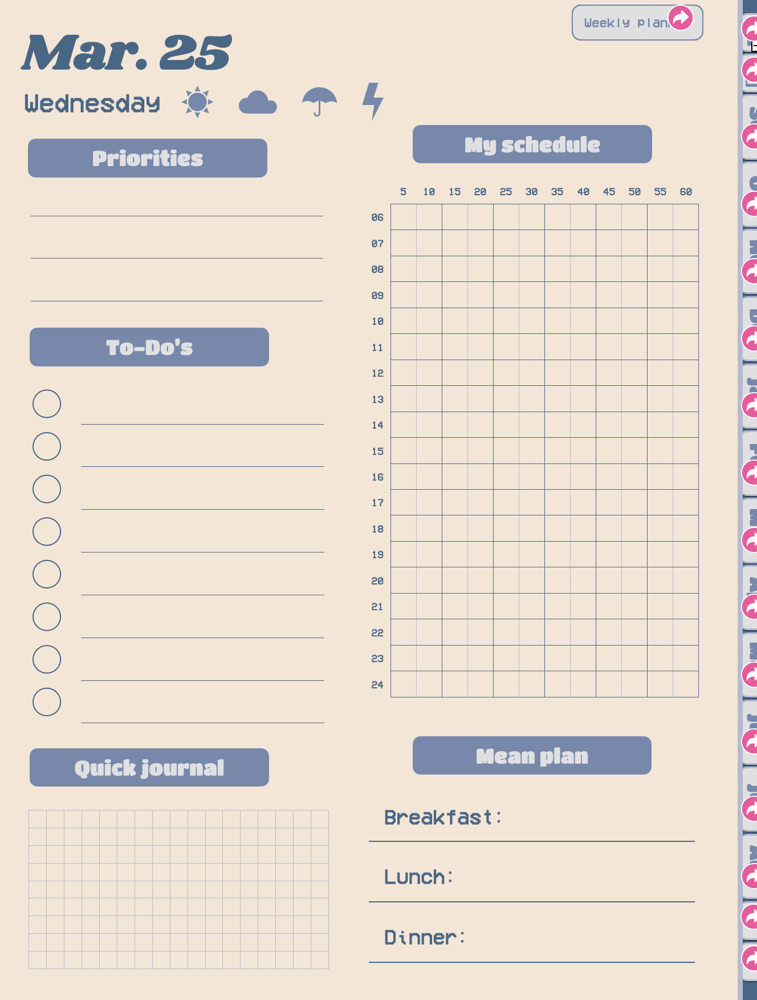

the "fuck it i'll do it myself" mentality
25/07/2025
I've always been told that I'm somewhat of a perfectionist (when it comes to stuff I care about, at least), but recently I realized that this trait has reached a new high. What I mean is that when I look for online services, I just have to find the thing that accomplishes what I want to do exactly how I want it. Which can get really, really fucking annoying sometimes.
Then there's also this Asian tendency, or perhaps it's because my parents limited my internet usage quite a lot when I was small, of avoiding paying especially for onlin products and services at all cost. Like, it's only very recently that I realized paying £3 for slime rancher probably isn't a criminal waste of money (considering how £3 would be a pretty guilt-free purchase had it been a physical product).
Still, in the name of saving money, I've avoided subscription services like a plague, but that also barred me from using lots of convinient, and most importantly, time saving services. But hey, £3 is £3.
So recently I've sorta developed this weird "fuck it I'll do it myself" mentality.
It started a few years back when I wanted to commission an artist to make me some discord emotes (yes I was that kinda kid in 2020), but there was no way I could've justified paying USD$10 for a chibi emote sticker pack to my parents. And then it occured to me that I can do digital art too?
Okay, okay, but digital art is already one of my pre-aquired skill, so this isn't really the peak of my mentality yet. BUT I think this website is the true result of my PEAK determination.
I've always wanted my own website for... whatever reasons. But I aboslutely hated most commercial website builders on the market because 1. they suck, 2. they're expensive, 3. both. And then I came across neocities and despite almost everyone else on the internet saying to only use it when you have some coding experience and/or a ton of free time, to which I have neither of.
In a sense, this "fuck it I'll do it myself" mentally is one of the best thing that happened to me, at least when it comes to this website. I still barely know how to code but hey, your looking at a hand-coded website with buttons that do stuff and I think that's pretty damn cool, and it continues to be one of the things I'm most proud of.
And now, I have a next brainchild birthed from this FIIDIM mineset: a fully hyperlinked goodnotes student planner. Y'know, the type that every it-girl on social medias use, has clickable tabs, and people sell for £20. Don't get me wrong, most of those digital planner sellers price their planner reasonably, but somehow a part of me still thinks spending hours designing an entire 12 months planner on keynotes is worth it as long I can save £20
I hope to get the planner finished before September, which is when my planner is supposed to start. And who knows, maybe I'll even sell my own planner online too. I already spent so much time making it, might as well earn some pocket money from it.
I don't mean to shamelessly plug my product, and I don't ever mean for this blog post to become an ad, but hey, if you're ever interested in digital planning, you can check out my shop (once it's out lol). I'll make sure whatever I make to sell, be it this planner or anything else I create, will be affordable to most people. Maybe like £10 or less is what I'm thinking, but it's not set in stone yet.
 a sneak peek of the plannerAnyways, that's what I've been up to, and probably been spending too much time on, recently. Sorry that this post is once again an unstructered mess, but hey, that's the fun of it imo.
P.S. I've set up a buy me a coffee page due to the delusion that maybe, just maybe, someone will want to fund my work?? But hey, never hurt to try. I'll link it on this site all cute and stuff once I'm done drawing the button.
me to yall rn pspspspsps